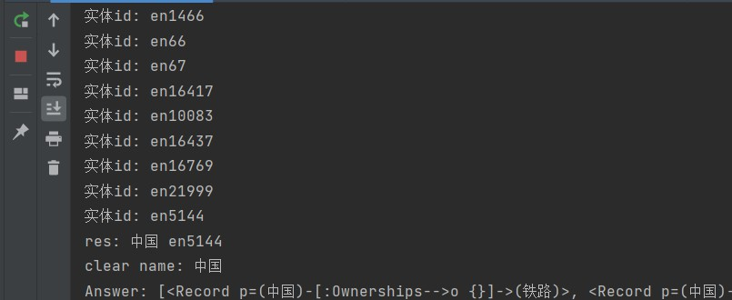

个人简历
姓名：刘扬
出生年月日：2000.03.18
电话号码：17795732893
邮箱：1774611802@qq.com
1.教育经历 
2.工作经历
3.活动经历
4.其他
5.个人总结
-
教育经历
2017年09月 -2021年07月 西安电子科技大学
通信工程 本科 通信工程
- 2017年起就读于西安电子科技大学通信工程学院，项目实践经历较为丰富，英语水平良好，国家英语四级552，评级优秀，英语六级通过。主要参与了一些数据传输类和控制类电子设计项目。
- 大二期间独立完成过期末项目设计的网页制作部分，对于网络及系统的维护与监控有过学习经历。
- 大三期间主要参与了软件无线电传输类设计，通过在软件平台搭建通信系统，并设计调制解调相关算法，实现了完整的OFDM系统通信传输，并在无线信道中完成实际测试。在通信领域的系统设计和维护中积累过经验。
-
工作经历
2020年07月-2020年08月 东软睿道教育信息技术有限公司
移动研发Android开发工程师Android
2020年7月实习于东软睿道教育信息技术有限公司，通过实习了解并实际应用了Android开发的相关知识，在实习的过程中设计了一个理财通app，通过这次实习同时学习了网页的制作与界面的优化，同时还锻炼了自己的学习能力。
-
活动经历
- 2017年01月-2018年02月 校学生会科协
协调校团委各部门的工作，协同校团委文体部、组织部，先后成功组织“闪青”、“彩跑”等大型学院活动，活动平均参与人数500+
- 2018年03月-2020年03月 卡牌社团
组织过桌游比赛，同社团成员一起向同学们宣传过社团。
- 2017年10月 -2017年11月 校内电工实习
在校期间通过校内电工实习自制过收音机，提升了自己的动手能力
-
其他
技能：Excel，PPT等办公软件
兴趣爱好：足球，乒乓球，台球，电脑游戏等
-
个人总结
- 熟悉公司文档管理，熟练使用各种办公软件及设备
- 具有良好的沟通、协调能力，服务意识佳，有较强应变和学习能力
- 仪表端庄，形象气质佳，品行佳，言谈举止大方得体
- 有深度学习的需求，对于新事物有了解与学习的欲望
友情链接百度